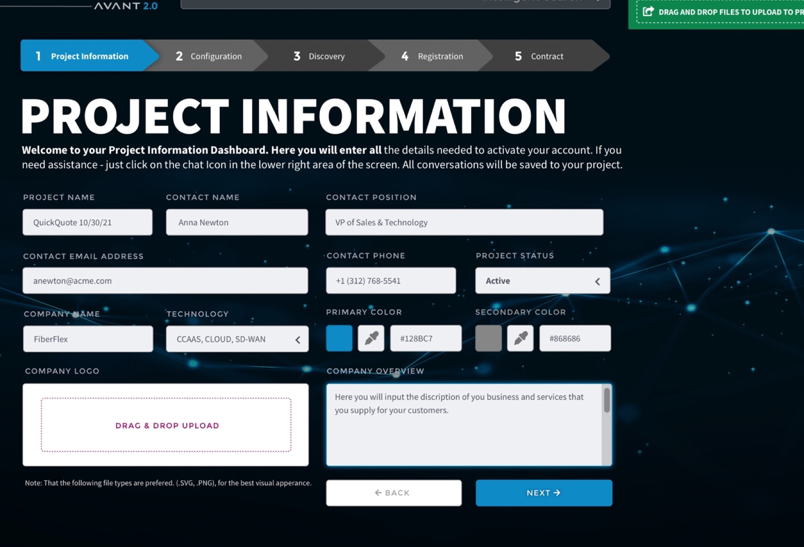

One tracked project, and every state is a different problem
Mapping the work end to end gave the product a shape. Every screen answers for one state of one project.
- 01
Project Information
Where the advisor lives between deals. It has to answer "what needs me today?" in five seconds without becoming a wall of numbers.
- 02
Configuration
The screen the client sees. It turns a market of dozens of providers into a defensible shortlist, one dense comparison row each.
- 03
Discovery
The longest state and the likeliest to stall, because assessments sit with engineers for days. The waiting had to read as progress and not as anxiety.
- 04
Registration
The irreversible step. It is its own state in the record, but its control sits inside Configuration, beside the comparison that justifies it. That placement came out of testing.
- 05
Contract
The state that has to outlive everyone. A signed deal becomes a deployment, a billing relationship, then a renewal handled by someone who was never in the room.


Project Information and Configuration as shipped, in the dark product theme.